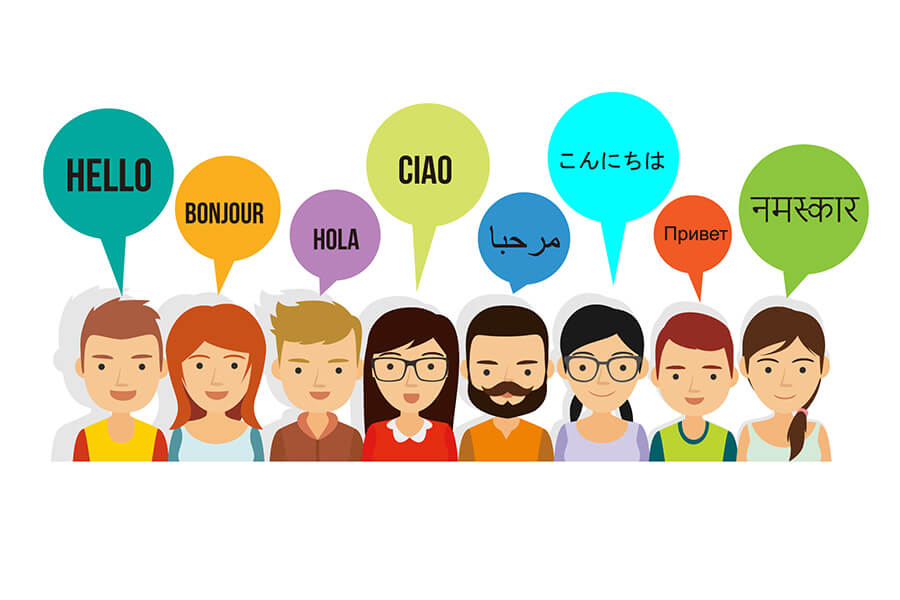
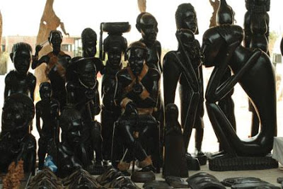
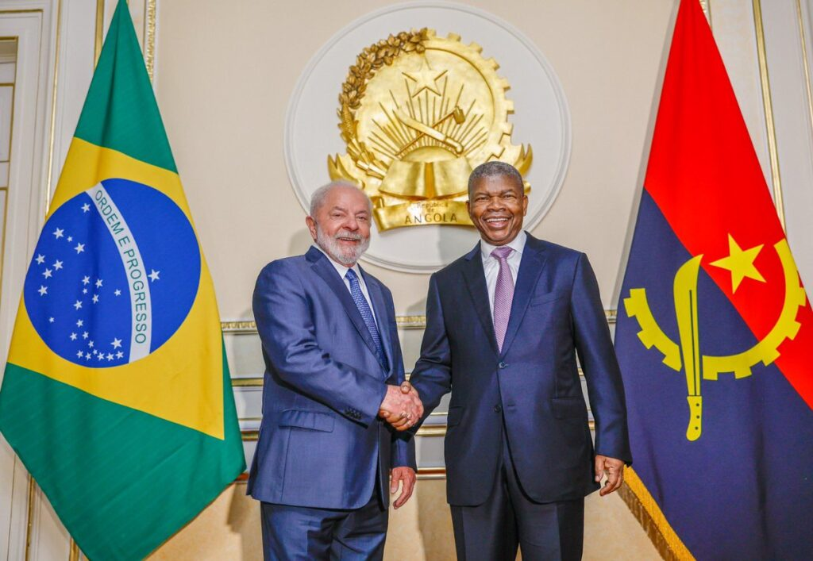

Os portugueses estiveram presentes desde o século XV em alguns pontos do que é hoje o território de Angola, interagindo de diversas maneiras com os povos nativos, principalmente com os habitantes do litoral. A delimitação do território apenas aconteceu no início do século XX. O primeiro europeu a chegar a Angola foi o explorador português Diogo Cão. Angola foi uma colónia portuguesa que apenas abrangeu o actual território do país no século XIX e a "ocupação efectiva", como determinado pela Conferência de Berlim em 1884, aconteceu apenas na década de 1920. A independência do domínio português foi alcançada em 1975, depois de uma guerra de independência. O Brasil foi o primeiro país a reconhecer a independência do país, ainda em 1975.[10] Após a independência, Angola foi palco de uma longa e devastadora guerra civil, de 1975 a 2002, sobretudo entre o MPLA e a UNITA. Apesar do conflito interno, áreas como a Baixa de Cassanje mantiveram activos seus sistemas monárquicos regionais. No ano de 2000 foi assinado um acordo de paz com a Frente para a Libertação do Enclave de Cabinda, organização de guerrilha que luta pela secessão de Cabinda e que ainda se encontra activa.[11] É da região de Cabinda que sai aproximadamente 65% do petróleo de Angola. Veja mais sobre a cultura da angola em Cultura.

O nome Angola é uma derivação portuguesa do termo banto n’gola, título dos reis do Reino do Dongo existente na altura em que os portugueses se estabeleceram em Luanda, no século XVI. O termo tem raízes no termo ngolo que significa "força" em quimbundo e em quicongo, línguas dos povos ambundos e congos respectivamente. Quando os portugueses chegaram à região da província de Luanda, observaram que o monarca local, Angola Quiluanje era assim denominado, passando a chamar o Reino Angola-Dongo com este título.
Uma curiosidade interessante sobre a angola, é que seu idioma oficial é o português, além de diversas línguas nacionais, como o Kikongo, exemplificado abaixo:
Olá, meu nome é Kauã.--> Olá, nkuame nkumbu kena kauã.
Como você se chama?--> Aweyi nge ovo bokela?
A cultura angolana é por um lado tributária das etnias(Veja um pouco dos dados demográficos em Dados Demográficos.) que se constituíram no país há séculos, principalmente os ovimbundos, ambundos, congos, chócues e ovambo. Por outro lado, Portugal esteve presente na região de Luanda e mais tarde também em Benguela a partir do século XVI, ocupando o território correspondente à Angola de hoje durante o século XIX e mantendo o controlo da região até 1975. Essa presença redundou em fortes influências culturais, a começar pela introdução da língua língua portuguesa e do cristianismo. Essa influência nota-se particularmente nas cidades onde hoje vive mais de metade da população. No lento processo de formação uma sociedade abrangente e coesa em Angola, que continua até hoje, registam-se por tudo isto "ingredientes" culturais muito diversos, em constelações que variam de região para região.
O basquete é o desporto mais popular em Angola. A sua seleção nacional venceu o Afrobasket 11 vezes e detém o recorde de maior número de títulos. Como uma equipa de ponta na África, é um concorrente regular nos Jogos Olímpicos de Verão e na Copa do Mundo da FIBA. No futebol, Angola sediou o Campeonato Africano das Nações de 2010. A seleção nacional qualificou-se para o Campeonato do Mundo FIFA de 2006, na sua primeira aparição na fase final de um Mundial de Futebol. Eles foram eliminados após uma derrota e dois empates na fase de grupos. Ganharam três Taças COSAFA e foram para a final da Campeonato das Nações Africanas de 2011. O país também apareceu nos Jogos Olímpicos de Verão durante sete anos e ambos competem regularmente e uma vez já sediou a Copa do Mundo de Hóquei em Patins FIRS, onde o melhor resultado é o sexto. Acredita-se também que Angola tenha raízes históricas na arte marcial "Capoeira Angola" e "Batuque", praticada por angolanos africanos escravizados transportados como parte do comércio atlântico de escravos.

A 16 de outubro de 2014, Angola foi eleita pela segunda vez membro não permanente do Conselho de Segurança das Nações Unidas, com 190 votos favoráveis de um total de 193. O mandato teve início a 1 de janeiro de 2015 e uma duração de dois anos.[87] Desde janeiro de 2014, a República de Angola ocupa a presidência da Conferência Internacional para a Região dos Grandes Lagos (CIRGL).[88] Em 2015, o secretário executivo da CIRGL, Ntumba Luaba, afirmou que Angola é o exemplo a ser seguido pelos membros da organização, devido aos avanços significativos registados ao longo dos 12 anos de paz, nomeadamente ao nível da estabilidade sócio-económica e político-militar.
| Posição | Localidade | Província | Pop. |
|---|---|---|---|
| 1 | Luanda | Luanda | 2 776 125 |
| 2 | Huambo | Huambo | 1 204 000 |
| 3 | Lobito | Benguela | 805 000 |
| 4 | Benguela | 513 000 | |
| 5 | Lubango | Huíla | 318 000 |